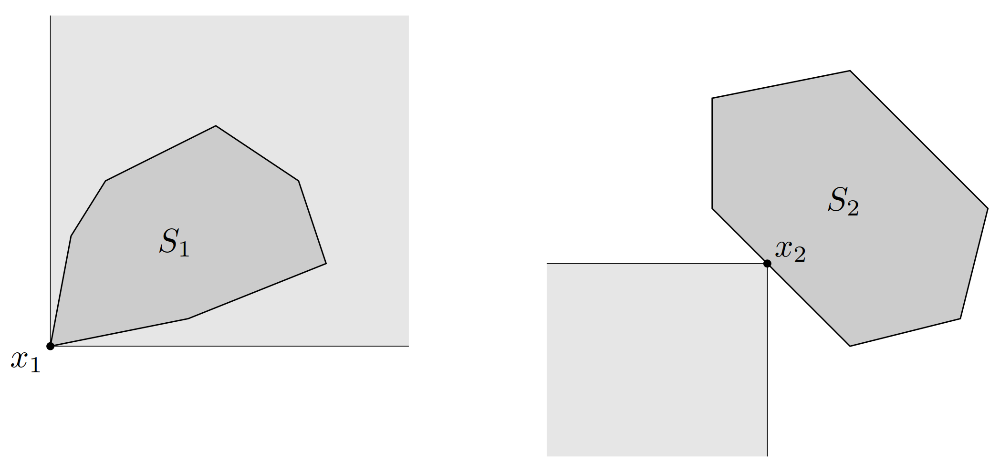
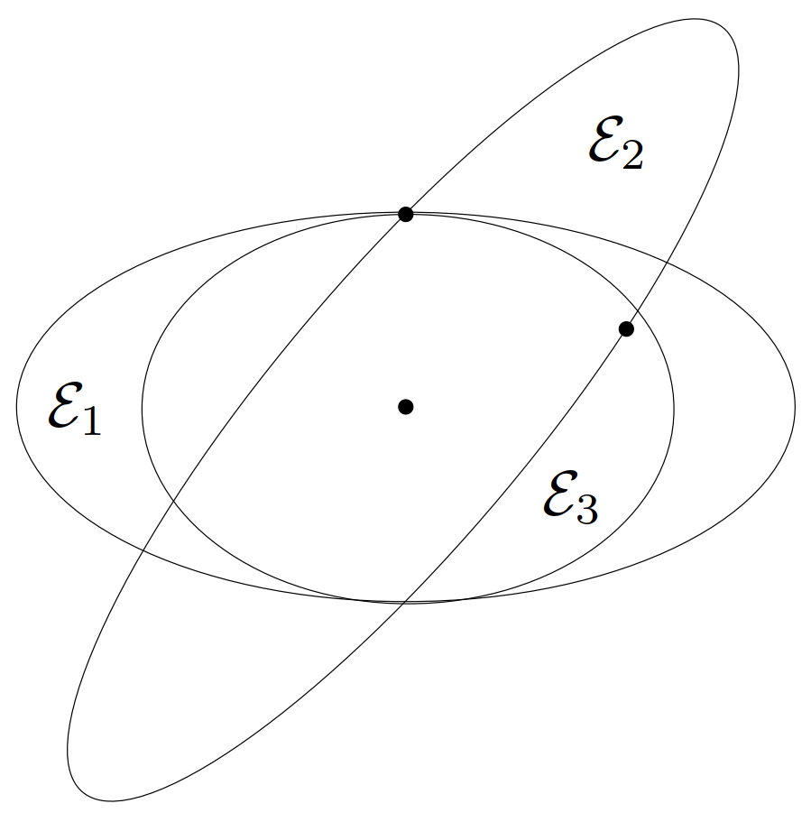

Josh's Note — 凸优化
Part 1.4 凸集—广义不等式
1. 正常锥与广义不等式
$ $ 称锥 \(K \subseteq \mathbf{R}^n\) 即为正常锥（proper cone），如果它满足下列条件
- K 是凸的。
- K 是闭的。
- K 是实（solid）的，即具有非空内部。
- K 是尖（pointed）的，即不包含直线（或者等价地，\(x\in K, -x \in K \Longrightarrow x = 0\)）。
正常锥 \(K\) 可以用来定义广义不等式（generalized inequality），即 \(\mathbf{R}^n\) 上的偏序关系。这种偏序关系和 \(\mathbf{R}\) 上的标准序有很多相同的性质。用正常锥 \(K\) 可以定义 \(\mathbf{R}^n\) 上的偏序关系如下
\[ x \preceq_K y \Longleftrightarrow y - x \in K \]
\(y \preceq_K x\) 也可以写为 \(x \succeq_K y\)。类似地，定义相应的严格偏序关系为
\[ x \prec_K y \Longleftrightarrow y - x \in \mathop{\bf int}K \]
并且可以同样地定义 \(x \succ_K y\)。（为将广义不等式 \(\preceq_K\) 与严格的广义不等式区分开，有时也称 \(\preceq_K\) 为不严格的广义不等式）。
当 \(K = \mathbf{R}_+\) 时，偏序关系 \(\preceq_K\) 就是通常意义上 \(\mathbf{R}\) 中的序 \(\leqslant\)；相应地，严格偏序关系 \(\prec_K\) 与 \(\mathbf{R}\) 上的严格序 \(<\) 相同。因此，广义不等式包含了 \(\mathbf{R}\) 上的（不严格和严格）不等式，它是广义不等式的一种特殊情况。
举例 非负象限及分量不等式。非负象限 \(K = \mathbf{R}^n_+\) 是一个正常锥。相应的广义不等式 \(\preceq_K\) 对应于向量间的分量不等式，即 \(x \preceq_K y\) 等价于 \(x_i \leqslant y_i, i = 1,\cdots,n\)。相应地，其严格不等式对应于严格的分量不等式，即 \(x \prec_K y\) 等价于 \(x_i < y_i, i = 1,\cdots,n\)。
我们会经常使用对应于非负象限的不严格和严格的偏序关系，因此省略下标 \(K\)。当 \(\preceq\) 或 \(\prec\) 出现在向量间的时候，该符号应被理解为分量不等式。
举例 半正定锥和矩阵不等式。半正定锥是 \(\mathbf{S}^n\) 空间中的正常锥，相应的广义不等式 \(\preceq_K\) 就是通常的矩阵不等式，即 \(X \preceq_K Y\) 等价于 \(Y - X\) 为半正定矩阵。（在 \(\mathbf{S}^n\) 中）\(\mathbf{S}^n_+\) 的内部由正定矩阵组成，因此严格广义不等式也等同于通常的对称矩阵的严格不等式，即 \(X \prec_K Y\) 等价于 \(Y - X\) 为正定矩阵。
这里，也是由于经常使用这种偏序关系，因此省略其下标，即对于对称矩阵，我们将广义不等式简写为 \(X \preceq Y\) 或 \(X \prec Y\), 它们表示关于半正定锥的广义不等式。
举例 \([0, 1]\) 上非负的多项式锥。\(K\) 定义如下
\[\begin{equation} K = \{ c\in\mathbf{R}^n\mid c_1 + c_2 t + \cdots + c_n t^{n-1} \geqslant 0\ 对于\ t \in [0,1]\} \end{equation}\]
即 \(K\) 是 \([0, 1]\) 上最高 \(n - 1\) 阶的非负多项式（系数）锥。可以看出 \(K\) 是一个正常锥，其内部是 \([0, 1]\) 上为正的多项式的系数集合。
两个向量 \(c, d \in \mathbf{R}^n\) 满足 \(c \preceq_K d\) 的充要条件是，对于所有 \(t \in [0, 1]\) 有
\[ c_1 + c_2 t + \cdots + c_n t^{n-1} \leqslant d_1 + d_2 t + \cdots + d_n t^{n-1} \]
1.1 广义不等式的性质
广义不等式 \(\preceq_K\) 满足许多性质，例如
- \(\preceq_K\) 对于加法是保序的：如果 \(x \preceq_K y\) 并且 \(u \preceq_K v\)，那么 \(x + u \preceq_K y + v\)。
- \(\preceq_K\) 具有传递性：如果 \(x \preceq_K y\) 并且 \(y \preceq_K z\)，那么 \(x \preceq_K z\)。
- \(\preceq_K\) 对于非负数乘是保序的：如果 \(x \preceq_K y\) 并且 \(\alpha \geqslant 0\)，那么 \(\alpha x \preceq_K \alpha y\)。
- \(\preceq_K\) 是自反的：\(x \preceq_K x\)。
- \(\preceq_K\) 是反对称的：如果 \(x \preceq_K y\) 并且 \(y \preceq_K x\)，那么 \(x = y\)。
- \(\preceq_K\) 对于极限运算是保序的：如果对于 \(i = 1,2,\dots\) 均有 \(x_i \preceq_K y_i\)，当 \(i \to \infty\) 时，有 \(x_i \to x\) 和 \(y_i \to y\)，那么 \(x \preceq_K y\)。
相应的广义不等式 \(\prec_K\) 也满足一些性质，例如
- 如果 \(x \prec_K y\)，那么 \(x \preceq_K y\)。
- 如果 \(x \prec_K y\) 并且 \(u \prec_K v\), 那么 \(x + u \prec_K y + v\)。
- 如果 \(x \prec_K y\) 并且 \(\alpha > 0\)，那么 \(\alpha x \prec_K \alpha y\)。
- \(x \nprec_K x\)。
- 如果 \(x \prec_K y\)，那么对于足够小的 \(u\) 和 \(v\) 有 \(x + u \prec_K y + v\)。
这些性质可以从 \(\preceq_K\) 和 \(\prec_K\) 的定义以及正常锥的性质中直接得到。
2. 最小与极小元
广义不等式的符号（\(\preceq_K\)，\(\prec_K\)）似乎表明它们与 \(\mathbf{R}\) 上的普通不等式（\(\leqslant\)，\(<\)）有着相同的性质。虽然普通不等式的许多性质对于广义不等式确实成立，但很多重要的性质并不如此。最明显的区别在于，\(\mathbf{R}\) 上的 \(\leqslant\) 是一个线性序（linear ordering），即任意两点都是可比的（comparable），也就是说 \(x\leqslant y\) 和 \(y \leqslant x\) 二者必居其一。这个性质对于其他广义不等式并不成立。这导致了最小、最大这些概念在广义不等式环境下变得更加复杂。本节将对此进行简要的讨论。
如果对于每个 \(y \in S\)，均有 \(x \preceq_K y\)，称 \(x\in S\) 是 \(S\)（关于广义不等式 \(\preceq_K\)）的最小元（minimum element）。类似地，我们可以定义关于广义不等式的最大元（maximum element）。如果一个集合有最小（或最大）元，那么它们是唯一的。
相对应的概念是极小元（minimal element）。如果 \(y \in S\)，\(y \preceq_K x\) 可以推得 \(y=x\)，那么称 \(x\in S\) 是 \(S\) 上（关于广义不等式 \(\preceq_K\)）的极小元（minimal element）。同样地，可以定义极大元（maximal element）。一个集合可以有多个极小（或极大）元。
可以用简单的集合符号对最小元和极小元进行描述。元素 \(x\in S\) 是 \(S\) 中的一个最小元，当且仅当
\[ S \subseteq x + K \]
这里 \(x+K\) 表示可以与 \(x\) 相比并且大于或等于（根据 \(\preceq_K\)）\(x\) 的所有元素。元素 \(x\in S\) 是极小元，当且仅当
\[ (x - K) \cap S = \{x\} \]
这里 \(x-K\) 表示可以与 \(x\) 相比并且小于或等于（根据立\(\preceq_K\)）\(x\) 的所有元素，它与 \(S\) 的唯一共同点即是 \(x\)。
\(K=\mathbf{R}^n\) 导出的实际上就是 \(\mathbf{R}\) 上一般的序。此时，极小和最小的概念是一致的，也符合集合最小元素的通常定义。
举例 考虑锥 \(\mathbf{R}^2_+\)，它导出的是 \(\mathbf{R}^2\) 上的关于分量的不等式。对此，可以给出一些关于极小元和最小元的简单的几何描述。不等式 \(x \preceq y\) 的含义是 \(y\) 在 \(x\) 之上、之右。\(x \in S\)是集合 \(S\) 的最小元，表明 \(S\) 的其他所有点都在它之上、之右。而 \(x\) 为集合 \(S\) 的极小元，是指 \(S\) 中没有任何一个点在 \(x\) 之下、之左，其区别可见图 17。

举例 对称矩阵集合中的最小元和极小元。用 \(A \in \mathbf{S}^n_{++}\) 表示一个圆心在原点的椭圆，即
\[ \mathcal{E}_A = \{ x\mid x^\mathrm{T}A^{-1} x \leqslant 1 \} \]
我们知道 \(A \preceq B\) 等价于 \(\mathcal{E}_A \subseteq \mathcal{E}_B\)。
给定 \(v_1,\cdots,v_k \in \mathbf{R}^n\) 并定义
\[ S = \{ P \in \mathbf{S}^n_{++}\mid v_i^\mathrm{T}P^{-1} v_i \leqslant 1,\ i = 1,\dots k \} \]
它对应于包含了点 \(v_1,\cdots,v_k\) 的椭圆的集合。集合 \(S\) 没有最小元：对于任意包含点\(v_1,\cdots,v_k\) 的椭圆，总可以找到另一个包含这些点但不可比的椭圆。一个椭圆是极小的，如果它包含这些点但没有更小的椭圆也包含这些点。图 18显示了 \(\mathbf{R}^2\) 上 \(k = 2\) 时的一个例子。

参考文献
- Stephen P. Boyd and Lieven Vandenberghe, Convex optimization. Cambridge, UK: Cambridge University Press, 2004.
- Stephen P. Boyd and Lieven Vandenberghe, 凸优化. 北京: 清华大学出版社, 2013.